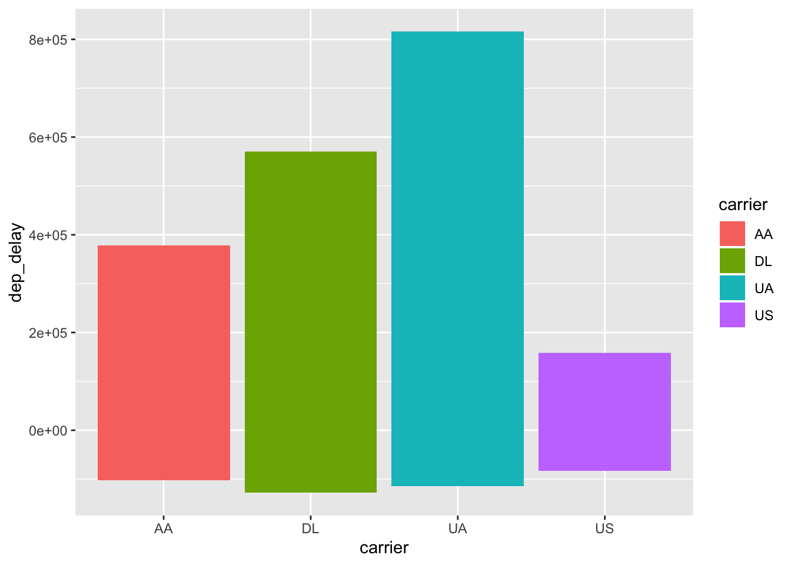

These notes and excercises come directly from Chapter 5 of R for Data Science & 12 & Lisa DeBruine & Dale Barr’s Data Skills Part 5. These notes are meant to accompany, not replace, these great resources!
library(tidyverse)
library(nycflights13) #for flights data
flights <- flights #from the nycflights13 packageNote that many of these changes would have to be saved back to the original dataframe to take permanent effect and are just shown here as temporary outputs.
Ex to save permanently: flights <- flights %>% filter(month == 1, day == 1)
Also note that many calls end with head() so that only the first 5 rows are printed.
filter()returns the values that match your criteria.
You can use the logical operators >, >=, <, <=, !=, ==
You can combine logical operators with &, | and ! (and, or, and not) Note: !(x & y) is the same as !x | !y, and !(x | y) is the same as !x & !y
If you are using a value with a lot of decimals, use near() to allow R to approximate the number i.e. col1 == near(sqrt(2) ^ 2, 2))
Arguments: 1. column1 (logical operator) outcome to match 2. opt: column 2 (logical operator) outcome to match
flights %>%
filter(month == 1, day == 1) #returns all flights on January 1st## # A tibble: 842 x 19
## year month day dep_time sched_dep_time dep_delay arr_time sched_arr_time
## <int> <int> <int> <int> <int> <dbl> <int> <int>
## 1 2013 1 1 517 515 2 830 819
## 2 2013 1 1 533 529 4 850 830
## 3 2013 1 1 542 540 2 923 850
## 4 2013 1 1 544 545 -1 1004 1022
## 5 2013 1 1 554 600 -6 812 837
## 6 2013 1 1 554 558 -4 740 728
## 7 2013 1 1 555 600 -5 913 854
## 8 2013 1 1 557 600 -3 709 723
## 9 2013 1 1 557 600 -3 838 846
## 10 2013 1 1 558 600 -2 753 745
## # … with 832 more rows, and 11 more variables: arr_delay <dbl>, carrier <chr>,
## # flight <int>, tailnum <chr>, origin <chr>, dest <chr>, air_time <dbl>,
## # distance <dbl>, hour <dbl>, minute <dbl>, time_hour <dttm>filter(flights, month == 11 | month == 12) #returns all flights in November or December## # A tibble: 55,403 x 19
## year month day dep_time sched_dep_time dep_delay arr_time sched_arr_time
## <int> <int> <int> <int> <int> <dbl> <int> <int>
## 1 2013 11 1 5 2359 6 352 345
## 2 2013 11 1 35 2250 105 123 2356
## 3 2013 11 1 455 500 -5 641 651
## 4 2013 11 1 539 545 -6 856 827
## 5 2013 11 1 542 545 -3 831 855
## 6 2013 11 1 549 600 -11 912 923
## 7 2013 11 1 550 600 -10 705 659
## 8 2013 11 1 554 600 -6 659 701
## 9 2013 11 1 554 600 -6 826 827
## 10 2013 11 1 554 600 -6 749 751
## # … with 55,393 more rows, and 11 more variables: arr_delay <dbl>,
## # carrier <chr>, flight <int>, tailnum <chr>, origin <chr>, dest <chr>,
## # air_time <dbl>, distance <dbl>, hour <dbl>, minute <dbl>, time_hour <dttm>flights %>%
filter(arr_delay >= 120 & dep_delay == 0) #returns all flights with an arival delay of greater than or equal to 120min and departure delay of 0## # A tibble: 3 x 19
## year month day dep_time sched_dep_time dep_delay arr_time sched_arr_time
## <int> <int> <int> <int> <int> <dbl> <int> <int>
## 1 2013 10 7 1350 1350 0 1736 1526
## 2 2013 5 23 1810 1810 0 2208 2000
## 3 2013 7 1 905 905 0 1443 1223
## # … with 11 more variables: arr_delay <dbl>, carrier <chr>, flight <int>,
## # tailnum <chr>, origin <chr>, dest <chr>, air_time <dbl>, distance <dbl>,
## # hour <dbl>, minute <dbl>, time_hour <dttm>Another option is %in%, which selects every row where x is one of the values of y.
filter(flights, month %in% c(11, 12)) %>%
head() #returns first five lines of flights in November and December## # A tibble: 6 x 19
## year month day dep_time sched_dep_time dep_delay arr_time sched_arr_time
## <int> <int> <int> <int> <int> <dbl> <int> <int>
## 1 2013 11 1 5 2359 6 352 345
## 2 2013 11 1 35 2250 105 123 2356
## 3 2013 11 1 455 500 -5 641 651
## 4 2013 11 1 539 545 -6 856 827
## 5 2013 11 1 542 545 -3 831 855
## 6 2013 11 1 549 600 -11 912 923
## # … with 11 more variables: arr_delay <dbl>, carrier <chr>, flight <int>,
## # tailnum <chr>, origin <chr>, dest <chr>, air_time <dbl>, distance <dbl>,
## # hour <dbl>, minute <dbl>, time_hour <dttm>filter() can also be used to show NAs in combination with the is.na() function.
flights %>%
filter(is.na(dep_time)) %>%
head() #restrict to first five lines## # A tibble: 6 x 19
## year month day dep_time sched_dep_time dep_delay arr_time sched_arr_time
## <int> <int> <int> <int> <int> <dbl> <int> <int>
## 1 2013 1 1 NA 1630 NA NA 1815
## 2 2013 1 1 NA 1935 NA NA 2240
## 3 2013 1 1 NA 1500 NA NA 1825
## 4 2013 1 1 NA 600 NA NA 901
## 5 2013 1 2 NA 1540 NA NA 1747
## 6 2013 1 2 NA 1620 NA NA 1746
## # … with 11 more variables: arr_delay <dbl>, carrier <chr>, flight <int>,
## # tailnum <chr>, origin <chr>, dest <chr>, air_time <dbl>, distance <dbl>,
## # hour <dbl>, minute <dbl>, time_hour <dttm>A useful filtering helper is between(). It is a shortcut for for x >= left & x <= right.
Syntax: between(x, left, right)
Example: ukb %>% filter(sex == "M", name == "Courtney", between(year, 1998, 2001))
arrange() orders the values of the columns. If you give more than one column, the following column will be the tiebreaker for preceding columns.
Use desc(COLUMNNAME) to arrange in descending order
arrange(flights, desc(dep_delay)) %>%
head() #returns the flights df sorted by dep_delay in descending order## # A tibble: 6 x 19
## year month day dep_time sched_dep_time dep_delay arr_time sched_arr_time
## <int> <int> <int> <int> <int> <dbl> <int> <int>
## 1 2013 1 9 641 900 1301 1242 1530
## 2 2013 6 15 1432 1935 1137 1607 2120
## 3 2013 1 10 1121 1635 1126 1239 1810
## 4 2013 9 20 1139 1845 1014 1457 2210
## 5 2013 7 22 845 1600 1005 1044 1815
## 6 2013 4 10 1100 1900 960 1342 2211
## # … with 11 more variables: arr_delay <dbl>, carrier <chr>, flight <int>,
## # tailnum <chr>, origin <chr>, dest <chr>, air_time <dbl>, distance <dbl>,
## # hour <dbl>, minute <dbl>, time_hour <dttm>arrange(flights, year, month, day) %>%
head()## # A tibble: 6 x 19
## year month day dep_time sched_dep_time dep_delay arr_time sched_arr_time
## <int> <int> <int> <int> <int> <dbl> <int> <int>
## 1 2013 1 1 517 515 2 830 819
## 2 2013 1 1 533 529 4 850 830
## 3 2013 1 1 542 540 2 923 850
## 4 2013 1 1 544 545 -1 1004 1022
## 5 2013 1 1 554 600 -6 812 837
## 6 2013 1 1 554 558 -4 740 728
## # … with 11 more variables: arr_delay <dbl>, carrier <chr>, flight <int>,
## # tailnum <chr>, origin <chr>, dest <chr>, air_time <dbl>, distance <dbl>,
## # hour <dbl>, minute <dbl>, time_hour <dttm>Note: NAs go at the end by default.
select() gives you the table with the columns you provide, in that order. It will only return the selected columns and can be used to subset several columns.
You can use multiple functions with select() starts_with("") ends_with("") contains("") matches("")(takes regular expressions) num_range("x", 1:3) (matches x1, x2, x3) one_of() “matches variable names in a character vector”
flights %>%
select(year, month, day)## # A tibble: 336,776 x 3
## year month day
## <int> <int> <int>
## 1 2013 1 1
## 2 2013 1 1
## 3 2013 1 1
## 4 2013 1 1
## 5 2013 1 1
## 6 2013 1 1
## 7 2013 1 1
## 8 2013 1 1
## 9 2013 1 1
## 10 2013 1 1
## # … with 336,766 more rowsYou can also select or deselect a range of columns with a colon (:). You can also remove columns by preceding them with minus (-).
select(flights, -(year:day)) %>%
head()## # A tibble: 6 x 16
## dep_time sched_dep_time dep_delay arr_time sched_arr_time arr_delay carrier
## <int> <int> <dbl> <int> <int> <dbl> <chr>
## 1 517 515 2 830 819 11 UA
## 2 533 529 4 850 830 20 UA
## 3 542 540 2 923 850 33 AA
## 4 544 545 -1 1004 1022 -18 B6
## 5 554 600 -6 812 837 -25 DL
## 6 554 558 -4 740 728 12 UA
## # … with 9 more variables: flight <int>, tailnum <chr>, origin <chr>,
## # dest <chr>, air_time <dbl>, distance <dbl>, hour <dbl>, minute <dbl>,
## # time_hour <dttm>select() will only return the columns you explicitly list, unless you use everything() Using this can be useful just for reordering columns without excluding anything.
select(flights, time_hour, air_time, everything()) %>%
head()## # A tibble: 6 x 19
## time_hour air_time year month day dep_time sched_dep_time
## <dttm> <dbl> <int> <int> <int> <int> <int>
## 1 2013-01-01 05:00:00 227 2013 1 1 517 515
## 2 2013-01-01 05:00:00 227 2013 1 1 533 529
## 3 2013-01-01 05:00:00 160 2013 1 1 542 540
## 4 2013-01-01 05:00:00 183 2013 1 1 544 545
## 5 2013-01-01 06:00:00 116 2013 1 1 554 600
## 6 2013-01-01 05:00:00 150 2013 1 1 554 558
## # … with 12 more variables: dep_delay <dbl>, arr_time <int>,
## # sched_arr_time <int>, arr_delay <dbl>, carrier <chr>, flight <int>,
## # tailnum <chr>, origin <chr>, dest <chr>, distance <dbl>, hour <dbl>,
## # minute <dbl>Renames columns. Ex: rename(flights, tail_num = tailnum) renames the column ‘tailnum’ to ‘tail_num’.
mutate() creates a new column that can be a function of another column. The new columnns are added to the left.
You can use: -arithmetic operators: +, -, *, x/sum(x) (proportion), x - mean(x) (diff. from mean), %/% (integer rounding), %% (modulo), log2(), etc. -logical comparisons: ==, !=, <=, etc. -other: min_rank, max_rank, cumsum, cummean, ntile, row_number()
flights %>%
mutate(
gain = dep_delay - arr_delay,
hours = air_time / 60,
gain_per_hour = gain / hours) %>%
head()## # A tibble: 6 x 22
## year month day dep_time sched_dep_time dep_delay arr_time sched_arr_time
## <int> <int> <int> <int> <int> <dbl> <int> <int>
## 1 2013 1 1 517 515 2 830 819
## 2 2013 1 1 533 529 4 850 830
## 3 2013 1 1 542 540 2 923 850
## 4 2013 1 1 544 545 -1 1004 1022
## 5 2013 1 1 554 600 -6 812 837
## 6 2013 1 1 554 558 -4 740 728
## # … with 14 more variables: arr_delay <dbl>, carrier <chr>, flight <int>,
## # tailnum <chr>, origin <chr>, dest <chr>, air_time <dbl>, distance <dbl>,
## # hour <dbl>, minute <dbl>, time_hour <dttm>, gain <dbl>, hours <dbl>,
## # gain_per_hour <dbl>transmute() is similiar to mutate but keeps only the new columns you create and deletes the others.
flights %>%
transmute(
dep_time,
hour = dep_time %/% 100,
minute = dep_time %% 100
) %>%
head()## # A tibble: 6 x 3
## dep_time hour minute
## <int> <dbl> <dbl>
## 1 517 5 17
## 2 533 5 33
## 3 542 5 42
## 4 544 5 44
## 5 554 5 54
## 6 554 5 54summarise() collaspes a dataframe into a single row. It is most useful when used with group_by(), which allows you to look at different groups.
Some things you can summarise include: -mean(), median(), sd() -min(), max() -x[length(x)] (last in the range) -IQR() interquartile range -quantile(x, 0.25) will find a value of the 25th quantile -Measures of position: first(x), nth(x, 2), last(x) -Count: n() -Count NAs: sum(!is.na(x)) -Count uniques: n_distinct(x)
flights %>%
group_by(year, month, day) %>%
summarise(delay = mean(dep_delay, na.rm = TRUE)) %>%
head()## # A tibble: 6 x 4
## # Groups: year, month [1]
## year month day delay
## <int> <int> <int> <dbl>
## 1 2013 1 1 11.5
## 2 2013 1 2 13.9
## 3 2013 1 3 11.0
## 4 2013 1 4 8.95
## 5 2013 1 5 5.73
## 6 2013 1 6 7.15Note that na.rm = TRUE is really important here, or else the mean for any group with any NA in the column dep_delay would be NA!
When you use groupby(), it’s helpful to include the count n() to get an idea for the scale that you’re looking at. For example, to know if you’re looking at a mean of 4 datapoints or 4000.
not_cancelled <- flights %>%
filter(!is.na(dep_delay), !is.na(arr_delay)) #make a subset of flights that were not cancelled, save it as a new df
not_cancelled %>%
group_by(tailnum) %>%
summarise(
delay = mean(arr_delay, na.rm = TRUE),
n = n()
) %>%
head()#shows the tail number, the mean delay and the number of items with that tail number for the first 5 rows## # A tibble: 6 x 3
## tailnum delay n
## <chr> <dbl> <int>
## 1 D942DN 31.5 4
## 2 N0EGMQ 9.98 352
## 3 N10156 12.7 145
## 4 N102UW 2.94 48
## 5 N103US -6.93 46
## 6 N104UW 1.80 46Note that we first removed NAs systematically to better work with the data.
Another example, here we summarize the average sandard deviation by destination arranged in descending order.
not_cancelled %>%
group_by(dest) %>%
summarise(distance_sd = sd(distance)) %>%
arrange(desc(distance_sd)) %>%
head()## # A tibble: 6 x 2
## dest distance_sd
## <chr> <dbl>
## 1 EGE 10.5
## 2 SAN 10.4
## 3 SFO 10.2
## 4 HNL 10.0
## 5 SEA 9.98
## 6 LAS 9.91Here, we find the destinations with the most carriers:
not_cancelled %>%
group_by(dest) %>%
summarise(carriers = n_distinct(carrier)) %>%
arrange(desc(carriers)) %>%
head()## # A tibble: 6 x 2
## dest carriers
## <chr> <int>
## 1 ATL 7
## 2 BOS 7
## 3 CLT 7
## 4 ORD 7
## 5 TPA 7
## 6 AUS 6You can also use logical operators with summarise(), because TRUE returns 1 and FALSE returns 0.
not_cancelled %>%
group_by(year, month, day) %>%
summarise(n_early = sum(dep_time < 500)) %>%
head()## # A tibble: 6 x 4
## # Groups: year, month [1]
## year month day n_early
## <int> <int> <int> <int>
## 1 2013 1 1 0
## 2 2013 1 2 3
## 3 2013 1 3 4
## 4 2013 1 4 3
## 5 2013 1 5 3
## 6 2013 1 6 2Returns a count of all unique options.
not_cancelled %>%
count(dest) %>%
head()## # A tibble: 6 x 2
## dest n
## <chr> <int>
## 1 ABQ 254
## 2 ACK 264
## 3 ALB 418
## 4 ANC 8
## 5 ATL 16837
## 6 AUS 2411You can also use it to sum another variable by providing a ‘weight’ wt=
not_cancelled %>%
count(tailnum, wt = distance) %>%
head()## # A tibble: 6 x 2
## tailnum n
## <chr> <dbl>
## 1 D942DN 3418
## 2 N0EGMQ 239143
## 3 N10156 109664
## 4 N102UW 25722
## 5 N103US 24619
## 6 N104UW 24616To undo the grouping use ungroup(). This is useful when you want to create a new column by calculating a group variable, then want to return to original rows for further steps.
You can also include ggplot in dplyr piped sequences to take a look at data. Just note that ggplot doesn’t use pipes but rather +
flights %>%
filter(carrier %in% c("AA", "DL", "UA", "US")) %>%
ggplot(mapping = aes(x = carrier, y = dep_delay, fill = carrier)) +
geom_bar(stat="identity")## Warning: Removed 2334 rows containing missing values (position_stack).